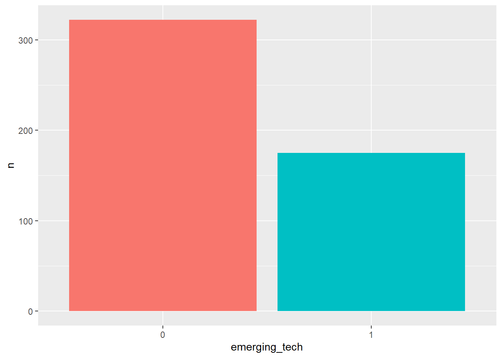
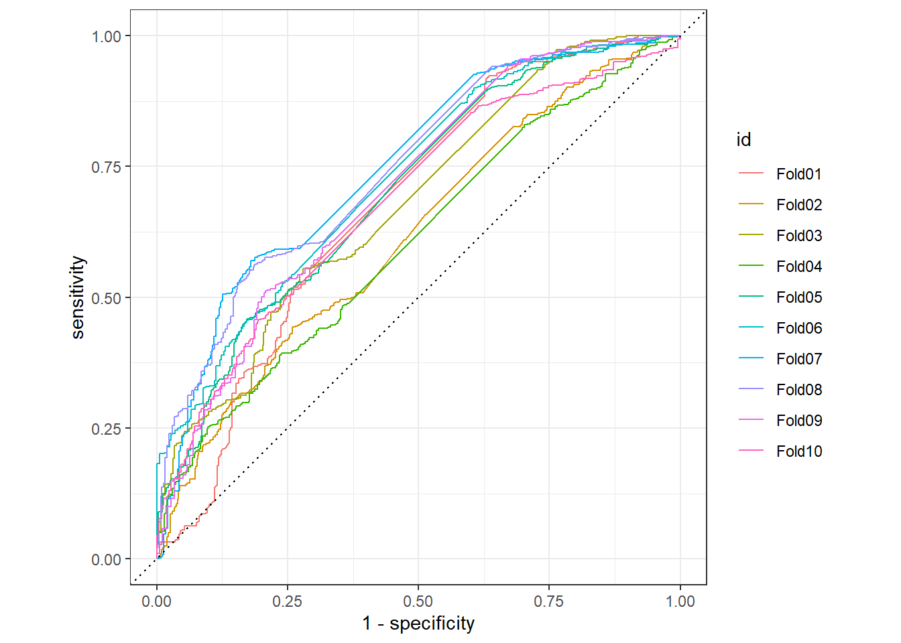
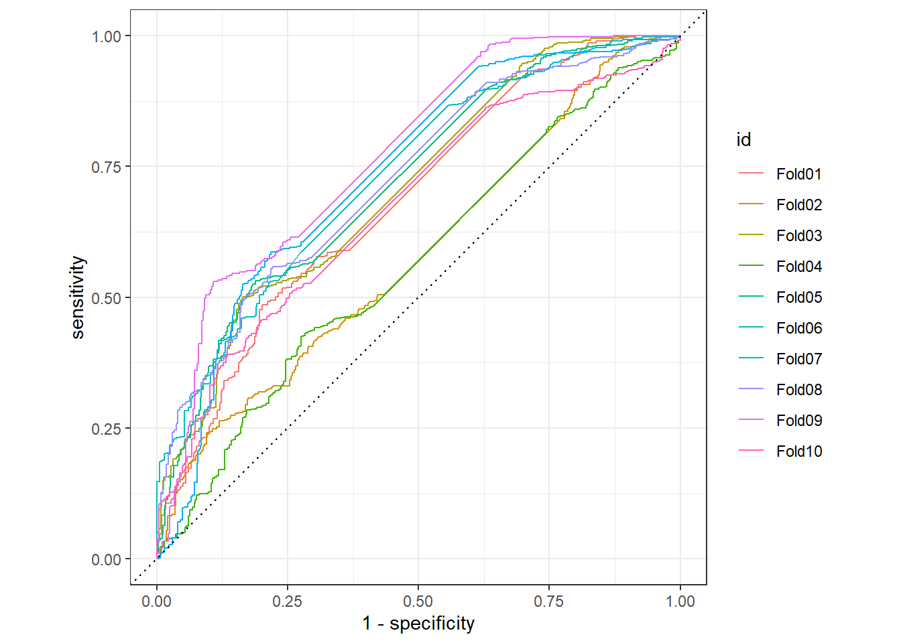
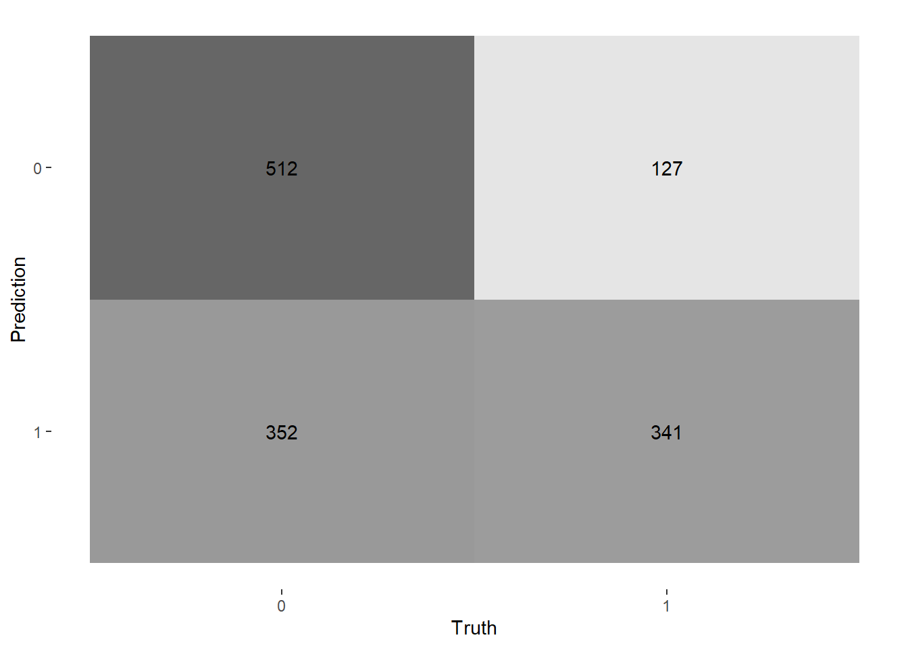
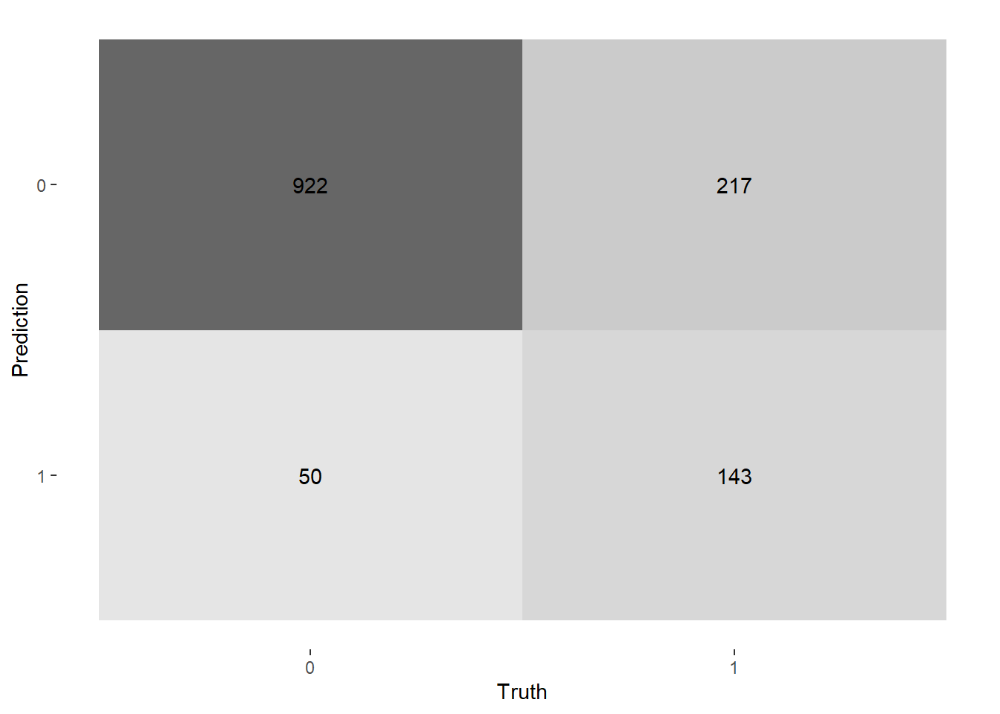
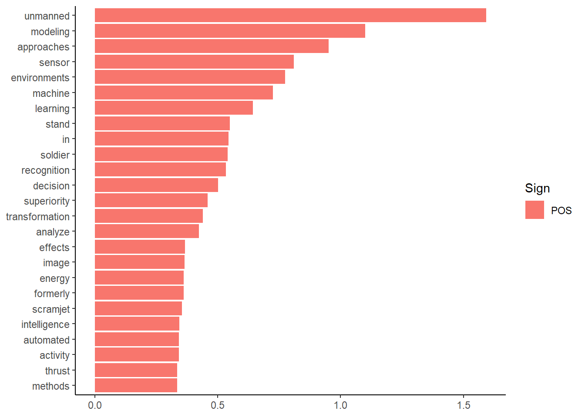
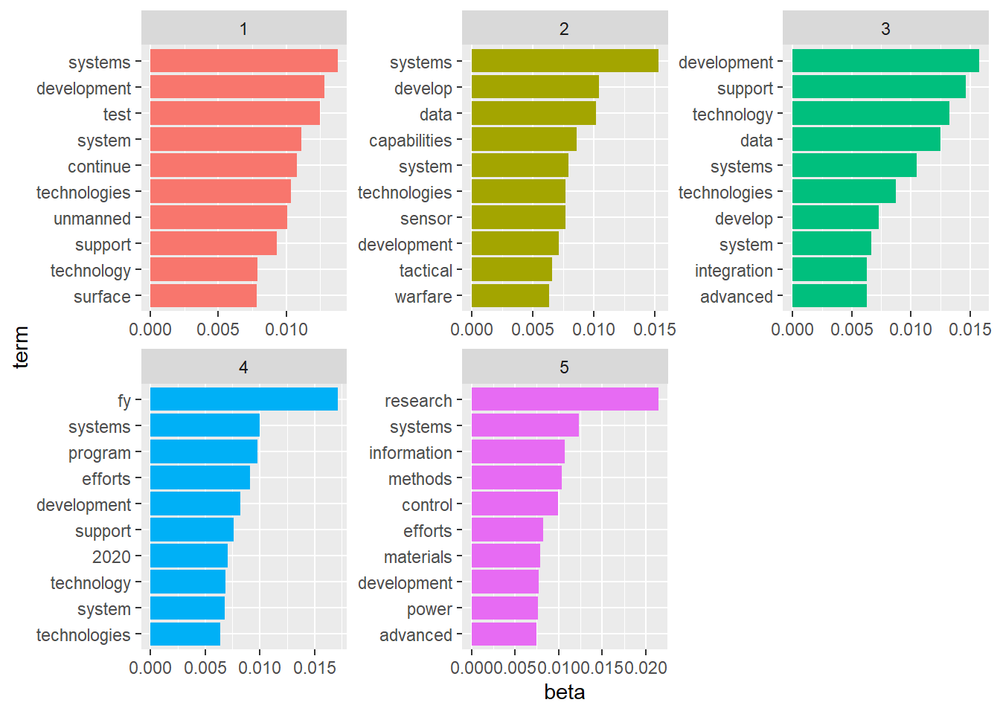

This project classifies Planned Programs/Accomplishments in the DoD RDT&E budget based on whether the text of the program is related to emerging technologies or not. This is related to my previous projects on the DoD budget, here and here.
However, the code below is related to some work I’m doing with a really great team at DataRobot (including Ian Clark, Sarah Khatry, Eric Loeb, and Ted Kwartler) for the National Security Commission on Artificial Intelligence. The NSCAI is producing a report for Congress on U.S. AI strategy, which includes data and visualizations on DoD AI spending. The code below is just an example of the kind of work that we’re doing – the actual models for AI classification for the NSCAI were made using DataRobot’s automated ML platform and use Keras/TensorFlow.
Regardless, this project contains many of the changes that I had wanted to make previously. For example, it uses XMLs of the RDT&E budget instead of scraping the PDFs, like I’d done previously (thanks to Chris Bridge, my coworker at Janes, for that!). It also uses multiple binary classification models instead of a multiclass model.
To standardize our terminology, we decided to call the most specific line item budget allocations in the RDT&E budget “programs”, which are within “projects”, which are themselves under “program elements”. In our dataset, these are abbreviated, “prog_”, “proj_”, and “pe_”, respectively.
The file I read in below contains 600 programs hand-labeled (by Ian, Sarah, and me) as related to emerging tech or not. Note that we’re more or less using the DoD’s modernization priorities to determine what is within the broader category of “emerging tech” or not. For a full analysis, we’d then take all of the programs classified as emerging tech by the model and run subsequent one-vs-all binary classification models for each category of emerging tech (i.e. hypersonics, AI, quantum, etc.), but here we’ll just do the broader emerging tech category as an example.
library(tidyverse)
library(janitor)
library(tidymodels)
library(topicmodels)
library(textrecipes)
library(tidytext)
library(textfeatures)
emerging_tech <- read_csv("C:\\Users\\chad.peltier\\OneDrive - IHS Markit\\Desktop\\data_projects\\NCSAI_budget_analysis\\scripts\\emerging_tech_training.csv")
glimpse(emerging_tech)## Rows: 600
## Columns: 8
## $ budget_year <dbl> 2021, 2021, 2021, 2021, 2021, 2021, 2021, 2...
## $ project_number <chr> "6369DF", "ES1", "CD1", "65A006", "FF2", "T...
## $ program_element_number <chr> "0603203F", "0607134A", "0608041A", "120642...
## $ prog_title <chr> "Sensing Assignments and Multisource Analyt...
## $ prog_description <chr> "Develop advanced techniques for multi-doma...
## $ prog_current_year_plans <chr> "Develop algorithms to generate and modify ...
## $ prog_year_one_plans <chr> "For FY 2021, this work is performed under ...
## $ emerging_tech <dbl> 1, 0, 0, 1, 0, 0, 0, 1, 0, NA, 1, 0, 0, 1, ...To prep this data for modeling, we’ll do a few things first.
emerging_tech_raw <- emerging_tech %>%
mutate(row_num = row_number()) %>%
unite(col = text, starts_with("prog_"), sep = " ", na.rm = TRUE, remove = TRUE) %>%
unite(col = "id", c(budget_year, project_number, program_element_number, row_num),
sep = "_", na.rm = TRUE, remove = TRUE ) %>%
filter(!is.na(emerging_tech)) %>%
mutate(text = str_replace_all(text, regex("\\W+"), " "),
text = str_remove_all(text, "[\r\t\n]"),
emerging_tech = factor(emerging_tech, levels = c("0", "1"))) %>%
drop_na()
emerging_tech_raw %>%
count(emerging_tech) %>%
ggplot(aes(x = emerging_tech, y = n, fill = emerging_tech)) +
geom_col() +
theme(legend.position = "none")
As you can see, there’s some class imbalance in our emerging tech variable.
Next, we’ll split the data into training and testing data frames, and create 10 cross validation folds for resampling and tuning later on.
# emerging tech
set.seed(123)
emerging_split <- initial_split(emerging_tech_raw)
emerging_train <- training(emerging_split)
emerging_test <- testing(emerging_split)
set.seed(234)
emerging_folds <- vfold_cv(emerging_train, v = 10) We’ll try two different recipes, where the primary difference is that the second recipe creates text features from the data. While I don’t think most text features will be relevant to this data, I thought maybe the length of a program description and current/future year plans might be indicative of whether something was emerging tech or not (maybe emerging technologies require longer descriptions in order to explain what the technologies are?).
Otherwise, the recipes below mostly just take care of the ID column, tokenize the text column and set the max number of tokens to be tuned later on, use TF-IDF, normalize the predictors for using our lasso model, then upsample the dependent variable because of the class imbalance.
## emerging tech
emerging_rec <- recipe(emerging_tech ~ ., data = emerging_train) %>%
update_role(id, new_role = "id") %>%
step_tokenize(text) %>%
step_tokenfilter(text, max_tokens = tune::tune()) %>%
step_tfidf(text) %>%
step_normalize(recipes::all_predictors()) %>%
themis::step_upsample(emerging_tech)
emerging_rec_tf <- recipe(emerging_tech ~ ., data = emerging_train) %>%
update_role(id, new_role = "id") %>%
step_mutate(text2 = text) %>%
step_textfeature(text2) %>%
step_tokenize(text) %>%
step_tokenfilter(text, max_tokens = tune::tune()) %>%
step_tfidf(text) %>%
step_zv(recipes::all_predictors()) %>%
step_normalize(recipes::all_predictors()) %>%
themis::step_upsample(emerging_tech)We’ll try just a single model for demonstration – a lasso logistic regression. As SMLTAR explains, a regularized classification model is well-suited for handling sparse data and avoiding over-fitting. We’ll tune the penalty values, too.
The recipe and model then go in a workflow.
lasso_spec <- logistic_reg(penalty = tune(), mixture = 1) %>%
set_mode("classification") %>%
set_engine("glmnet")
emerging_wf_lasso <- workflow() %>%
add_recipe(emerging_rec) %>%
add_model(lasso_spec)
emerging_wf_lasso_tf <- workflow() %>%
add_recipe(emerging_rec_tf) %>%
add_model(lasso_spec)I’ll then create a tuning grid:
final_grid <- grid_regular(penalty(range = c(-4, 0)),
max_tokens(range = c(500, 2000)),
levels = 6)And finally, we can fit the models. I’ll use parallel processing to sped things up.
## lasso, no tf
all_cores <- parallel::detectCores(logical = FALSE)
cl <- parallel::makePSOCKcluster(all_cores)
doParallel::registerDoParallel(cl)
set.seed(1234)
emerging_lasso_rs <- tune_grid(emerging_wf_lasso,
emerging_folds,
grid = final_grid,
metrics = metric_set(accuracy, roc_auc),
control = control_grid(save_pred = TRUE, pkgs = c('textrecipes')))
## lasso, with tf
set.seed(2345)
emerging_lasso_rs_tf <- tune_grid(emerging_wf_lasso_tf,
emerging_folds,
grid = final_grid,
metrics = metric_set(accuracy, roc_auc),
control = control_grid(save_pred = TRUE, pkgs = c('textrecipes')))
# emerging_lasso_rs$.notes[[1]][[".notes"]]## emerging tech
collect_metrics(emerging_lasso_rs)## # A tibble: 72 x 8
## penalty max_tokens .metric .estimator mean n std_err .config
## <dbl> <int> <chr> <chr> <dbl> <int> <dbl> <chr>
## 1 0.0001 500 accuracy binary 0.695 10 0.0229 Recipe1_Model1
## 2 0.0001 500 roc_auc binary 0.755 10 0.0220 Recipe1_Model1
## 3 0.000631 500 accuracy binary 0.695 10 0.0229 Recipe1_Model2
## 4 0.000631 500 roc_auc binary 0.755 10 0.0220 Recipe1_Model2
## 5 0.00398 500 accuracy binary 0.708 10 0.0211 Recipe1_Model3
## 6 0.00398 500 roc_auc binary 0.767 10 0.0240 Recipe1_Model3
## 7 0.0251 500 accuracy binary 0.714 10 0.0232 Recipe1_Model4
## 8 0.0251 500 roc_auc binary 0.797 10 0.0269 Recipe1_Model4
## 9 0.158 500 accuracy binary 0.598 10 0.0427 Recipe1_Model5
## 10 0.158 500 roc_auc binary 0.521 10 0.0117 Recipe1_Model5
## # ... with 62 more rowsshow_best(emerging_lasso_rs, "accuracy")## # A tibble: 5 x 8
## penalty max_tokens .metric .estimator mean n std_err .config
## <dbl> <int> <chr> <chr> <dbl> <int> <dbl> <chr>
## 1 0.00398 2000 accuracy binary 0.740 10 0.0285 Recipe6_Model3
## 2 0.0001 1700 accuracy binary 0.740 10 0.0317 Recipe5_Model1
## 3 0.000631 1700 accuracy binary 0.740 10 0.0317 Recipe5_Model2
## 4 0.0001 2000 accuracy binary 0.735 10 0.0270 Recipe6_Model1
## 5 0.000631 2000 accuracy binary 0.735 10 0.0270 Recipe6_Model2show_best(emerging_lasso_rs, "roc_auc")## # A tibble: 5 x 8
## penalty max_tokens .metric .estimator mean n std_err .config
## <dbl> <int> <chr> <chr> <dbl> <int> <dbl> <chr>
## 1 0.0251 800 roc_auc binary 0.809 10 0.0266 Recipe2_Model4
## 2 0.0251 500 roc_auc binary 0.797 10 0.0269 Recipe1_Model4
## 3 0.0251 1100 roc_auc binary 0.791 10 0.0286 Recipe3_Model4
## 4 0.0251 1700 roc_auc binary 0.785 10 0.0357 Recipe5_Model4
## 5 0.0251 2000 roc_auc binary 0.783 10 0.0324 Recipe6_Model4lasso_pred <- collect_predictions(emerging_lasso_rs)
collect_metrics(emerging_lasso_rs_tf)## # A tibble: 72 x 8
## penalty max_tokens .metric .estimator mean n std_err .config
## <dbl> <int> <chr> <chr> <dbl> <int> <dbl> <chr>
## 1 0.0001 500 accuracy binary 0.697 10 0.0279 Recipe1_Model1
## 2 0.0001 500 roc_auc binary 0.747 10 0.0298 Recipe1_Model1
## 3 0.000631 500 accuracy binary 0.697 10 0.0279 Recipe1_Model2
## 4 0.000631 500 roc_auc binary 0.747 10 0.0298 Recipe1_Model2
## 5 0.00398 500 accuracy binary 0.716 10 0.0281 Recipe1_Model3
## 6 0.00398 500 roc_auc binary 0.764 10 0.0315 Recipe1_Model3
## 7 0.0251 500 accuracy binary 0.746 10 0.0351 Recipe1_Model4
## 8 0.0251 500 roc_auc binary 0.817 10 0.0334 Recipe1_Model4
## 9 0.158 500 accuracy binary 0.547 10 0.0489 Recipe1_Model5
## 10 0.158 500 roc_auc binary 0.5 10 0 Recipe1_Model5
## # ... with 62 more rowsshow_best(emerging_lasso_rs_tf, "accuracy")## # A tibble: 5 x 8
## penalty max_tokens .metric .estimator mean n std_err .config
## <dbl> <int> <chr> <chr> <dbl> <int> <dbl> <chr>
## 1 0.0251 500 accuracy binary 0.746 10 0.0351 Recipe1_Model4
## 2 0.0251 1100 accuracy binary 0.740 10 0.0343 Recipe3_Model4
## 3 0.0251 800 accuracy binary 0.740 10 0.0350 Recipe2_Model4
## 4 0.00398 1700 accuracy binary 0.730 10 0.0294 Recipe5_Model3
## 5 0.0251 1400 accuracy binary 0.727 10 0.0361 Recipe4_Model4show_best(emerging_lasso_rs_tf, "roc_auc")## # A tibble: 5 x 8
## penalty max_tokens .metric .estimator mean n std_err .config
## <dbl> <int> <chr> <chr> <dbl> <int> <dbl> <chr>
## 1 0.0251 1100 roc_auc binary 0.818 10 0.0376 Recipe3_Model4
## 2 0.0251 500 roc_auc binary 0.817 10 0.0334 Recipe1_Model4
## 3 0.0251 1700 roc_auc binary 0.805 10 0.0336 Recipe5_Model4
## 4 0.0251 1400 roc_auc binary 0.804 10 0.0343 Recipe4_Model4
## 5 0.0251 800 roc_auc binary 0.804 10 0.0364 Recipe2_Model4lasso_pred_tf <- collect_predictions(emerging_lasso_rs_tf)
lasso_pred %>%
group_by(id) %>%
roc_curve(truth = emerging_tech, .pred_0 ) %>%
autoplot()
lasso_pred_tf %>%
group_by(id) %>%
roc_curve(truth = emerging_tech, .pred_0 ) %>%
autoplot()
lasso_pred %>%
filter(id == "Fold07") %>%
conf_mat(emerging_tech, .pred_class) %>%
autoplot(type = "heatmap")
lasso_pred_tf %>%
filter(id == "Fold09") %>%
conf_mat(emerging_tech, .pred_class) %>%
autoplot(type = "heatmap")
Overall the models did pretty well. The best non-text features model had a mean accuracy of 74% and ROC AUC of 80.8%, while the text features model had a slightly higher accuracy of 74.5% and ROC AUC of 81.8%. There was more variation between the folds in the text features model.
The confusion matrices are interesting. The non-TF model has a tougher time with distinguishing true negatives from false positives, while the text features model seems to default more towards classifying things as non-emerging tech programs, and as a result it has a higher false negative rate than we’d like.
So our choice of model would really come down to whether we’d like to be more conservative or not with classifying programs as emerging tech. If we go with the non-TF option, we’d have to be OK with potentially under-counting the emerging tech programs.
I’ll stick with the option using text features here. I’ll finalize my workflow based on the best ROC AUC, then calculate variable importance using the VIP package, the do a final fit on the test data.
library(vip)
best_roc <- select_best(emerging_lasso_rs_tf, "roc_auc")
lasso_wf_final <- finalize_workflow(emerging_wf_lasso_tf, best_roc)
lasso_wf_final %>%
fit(emerging_train) %>%
pull_workflow_fit() %>%
vi(lambda = best_roc$penalty) %>%
slice_head(n = 25) %>%
mutate(Importance = abs(Importance),
Variable = str_remove(Variable, "tfidf_text_"),
Variable = fct_reorder(Variable, Importance)) %>%
ggplot(aes(Importance, Variable, fill = Sign)) +
geom_col() +
theme_classic() +
labs(x = NULL, y = NULL)
final_res <- lasso_wf_final %>%
last_fit(emerging_split, metrics = metric_set(accuracy, roc_auc))Ok, so even though our model included text features, none of the text features variables ended up in the top 25 variables – instead we’ve got words like unmanned, modeling, sensor, machine, learning, etc. It’s interesting that many of these words seem to be related to AI - like machine learning, and modeling, while some are related to hypersonics – scramjet and thrust, and some are related to unmanned systems – unmanned, automated. Also interesting is that approaches was the third-most valuable term. Let’s see some descriptions of how approaches is used:
set.seed(123)
emerging_train %>%
filter(str_detect(text, "approaches"),
emerging_tech == 1) %>%
select(text) %>%
sample_n(5) So, we’ve got descriptions like:
collect_metrics(final_res)
final_res %>%
collect_predictions() %>%
conf_mat(emerging_tech, .pred_class) %>%
autoplot(type = "heatmap")Great! So it looks like we didn’t overfit – in fact, our accuracy increased. The confusion matrix also shows a better true positive rate as well. 78% accuracy and 80% ROC AUC is not too bad!
Finally, just for fun, we can do some topic modeling using LDA. Let’s see if it’s possible to model emerging tech topics by filtering for only programs labeled as emerging tech.
## emerging tech
emerging_dtm <- emerging_tech_raw %>%
filter(emerging_tech == 1) %>%
unnest_tokens(word, text) %>%
anti_join(stop_words, by = "word") %>%
count(id, word, sort = TRUE) %>%
cast_dtm(id, word, n)
emerging_lda_alt <- LDA(emerging_dtm, k = 5, control = list(seed = 123))
emerging_topics <- emerging_lda_alt %>%
tidy(matrix = "beta")
emerging_top_terms <- emerging_topics %>%
group_by(topic) %>%
top_n(10, abs(beta)) %>%
ungroup() %>%
arrange(topic, desc(beta))
emerging_top_terms %>%
mutate(term = reorder_within(term, beta, topic)) %>%
ggplot(aes(beta, term, fill = factor(topic))) +
geom_col(show.legend = FALSE) +
facet_wrap(~ topic, scales = "free") +
scale_y_reordered()
Let’s see what we have here:
Finally, the textrecipes package also provides a method for topic modeling using the step_lda function, although it doesn’t currently allow for extracting the per-topic-per-word probabilities (although this may be added later).
emerging_lda_rec <- recipe(~ ., data = emerging_tech_raw) %>%
update_role(id, new_role = "id") %>%
update_role(emerging_tech, new_role = "other") %>%
step_lda(text)
set.seed(123)
emerging_lda_prep <- emerging_lda_rec %>%
prep()
emerging_lda <- emerging_lda_prep %>%
juice()
emerging_lda2 <- emerging_lda %>%
pivot_longer(lda_text_w1:lda_text_w10) %>%
group_by(id) %>%
top_n(1, value) %>%
select(id, top_topic = name) %>%
left_join(emerging_lda) %>%
left_join(emerging_tech_raw %>% select(id, text))